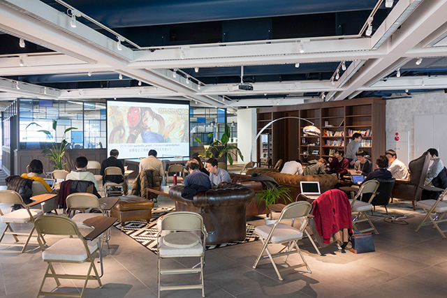
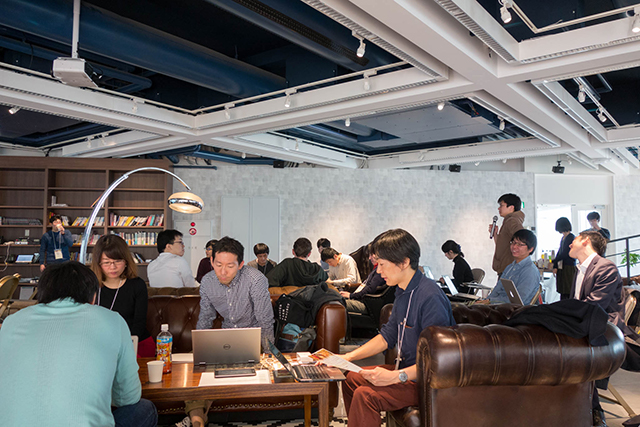
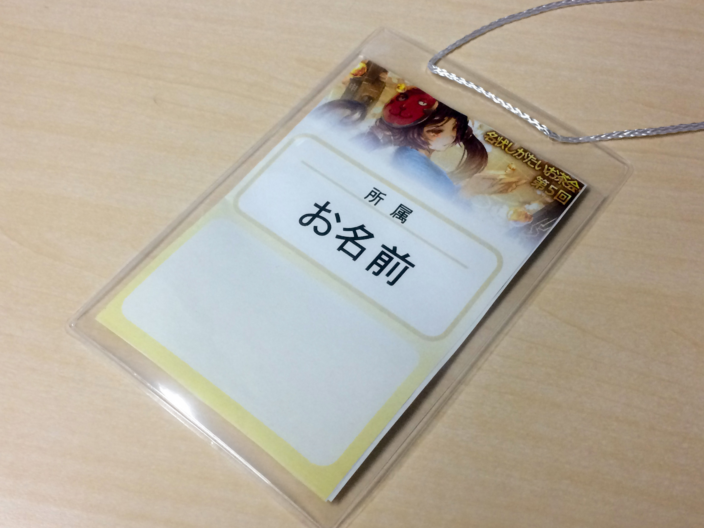
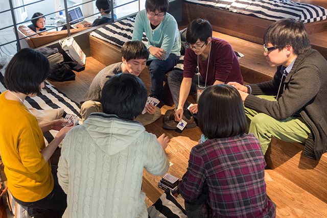

トップ
トップ第5回 名状しがたいお茶会
2016/2/13
名状しがたいお茶会へようこそ！一年に一度のお茶会も、早いものでもう5回目です。今年から複数名で運営タスクにあたっています。お茶会らしく温かい飲み物も出ます。会場はWantedlyさんにご提供いただき、Wantedlyチャットを使ってお茶会関連の議論を深める試みも始めました。濃ゆい一日をぜひ楽しんでいただければと思います。
タイムテーブル
時と場所
2016年2月13日 10時30分より、Wantedlyオフィスで開催されます。
Wantedlyオフィスは休日のため、通常の入り口が閉まっています。開場時間近辺はスタッフがいますが、もし遅れる場合は@arcatdmz宛てにツイートするなどして中の人にご連絡ください。
参加費
学生1000円、社会人2500円を予定しています。17時半までお菓子とお茶が出るほか、18-19時半まで夕飯とアルコールを含む飲み物が手配されています。
その他
電源、電源タップ、Wi-Fiがあります。ただ、Wi-Fiは多人数で同時接続すると不安定になることがあるため、インターネット接続が必須の方はご自身で用意していただくようおお願いします。
プロジェクタは解像度1280x720ピクセル(16:9)で、HDMI、mini DisplayPort、VGA接続が可能です。
当日の様子

開場前
質疑
名札
突発ゲーム会